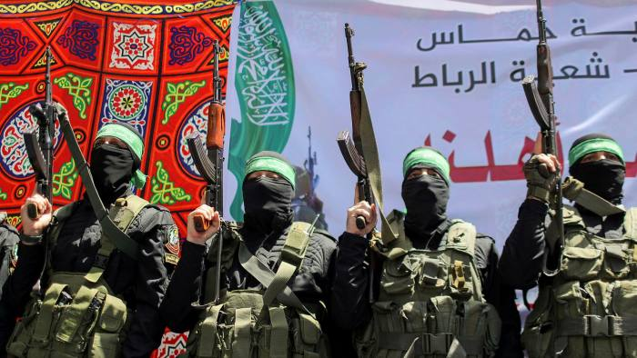

Israeli–Palestinian conflict comes to an end.
Israel, Hamas agree to ceasefire to end bloody 11-day war
The struggle between Israelis and Palestinians is one of the world's most enduring conflicts, with the Israeli occupation of the West Bank and the Gaza Strip reaching 54 years.Various attempts have been made to resolve the conflict as part of the Israeli–Palestinian peace process.On monday israeli armed forces stormed Al-Aqsa Mosque in the Haram esh-Sharif in Jerusalem, ahead of a march by Zionist nationalists commemorating Israel’s capture of the eastern half of the city in 1967. More than 300 Palestinians were injured in the raid. In retaliation, Hamas, the Islamist militant group that runs Gaza, fired dozens of rockets which were intercepted by israel's iron dome system The Israelis launched an airstrike on Gaza in response, killing at least 21 Palestinians, including nine children.
Reason behind the current Escalation
Tensions have been building up since the start of Ramzan in mid-April when Israeli police set up barricades at the Damascus Gate outside the occupied Old City, preventing Palestinians from gathering there. The threatened eviction of dozens of Palestinian families in the East Jerusalem neighborhood of Sheikh Jarrah escalated the crisis further in the last week of Ramzan. Clashes erupted on the night of May 7 in Jerusalem between Palestinian protesters and Israeli police in which hundreds of Palestinians and over a dozen Israeli police personnel were injured.
The Sheikh Jarrah dispute
Hundreds of thousands of Palestinians were forced out of their homes when the State of Israel was created in historical Palestine in 1948 (the Palestinians call the events ‘Nakba’, or catastrophe).
Twenty-eight of those Palestinian families moved to Sheikh Jarrah in East Jerusalem to settle there.
In 1956, when East Jerusalem was ruled by Jordan, the Jordanian Ministry of Construction and Development and the U.N. Relief and Works Agency facilitated the construction of houses for these families in Sheikh Jarrah. But Israel would capture East Jerusalem from Jordan in 1967.
By the early 1970s, Jewish agencies started demanding the families leave the land. Jewish committees claimed that the houses sat on land they purchased in 1885 (when Jews were migrating to historic Palestine that was part of the Ottoman Empire).
Earlier this year, the Central Court in East Jerusalem upheld a decision to evict four Palestinian families from their homes in Sheikh Jarrah in favor of Jewish settlers.
The fight for Jerusalem
Jerusalem has been at the centre of the Israeli-Palestinian conflict. According to the original 1947 UN partition plan, Jerusalem was proposed to be an international city. But in the first Arab Israel war of 1948, the Israelis captured the western half of the city, and Jordan took the eastern part, including the Old City that houses Haram al-Sharif.
Al-Aqsa Mosque, Islam’s third holiest site, and the Dome of the Rock are situated within Haram esh-Sharif (Noble Sanctury).
One side of the compound, called Temple Mount by the Jews, is the Wailing Wall (Western Wall), which is believed to be the remains of the Second Jewish Temple, the holiest site in Judaism.
Israel captured East Jerusalem from Jordan in the 1967 Six-Day War and annexed it later. Since its annexation, Israel has expanded settlements in East Jerusalem, which is now home for some 220,000 Jews.
Jews born in East Jerusalem are Israeli citizens, while Palestinians in the city are given conditional residency permits. Palestinians in East Jerusalem, unlike other parts of the occupied West Bank, can, however, apply for Israeli citizenship.
Very few Palestinians have done so. Israel sees the whole city as its “unified, eternal capital”, a claim endorsed by Donald Trump when he was U.S. President but not recognised by most other countries.
The Palestinian leadership across the political spectrum have maintained that they would not accept any compromise formula for the future Palestinian state unless East Jerusalem is its capital.
Death and Destruction
At least 198 people, including 58 children and 34 women, have been killed in the Gaza Strip since the latest violence began a week ago.
Israeli fighter jets carried out at least 55 air raids on Gaza early on Monday
Israeli air raids on Gaza City flattened three buildings and killed at least 42 people early on Sunday, health authorities said.
About three children in Gaza have been wounded every hour since violence flared last Monday, according to the organization,Save the Children.
Ten Israelis have been killed as thousands of rockets have been fired from Gaza.
Israeli Prime Minister Benjamin Netanyahu said the deadly bombing of the Gaza Strip would continue “full force” – despite an international outcry.
World leaders divided in their stand
With Israel and Palestine nearly on the verge of war,leaders of various countries had a significant difference in their opinion
The US president Joe Biden and a majority of the countries in the European Union hoped that the conflict would end soon, but sided with Israel stating that they had the right to defend themselves when they came under attack from the Hamas.
Countries like Russia,UK,India and China urged for complete and immediate de-escalation citing the number of civilian casualities.
Arab countries like Saudi Arabia and Pakistan condemned the violence caused by the israeli force during the holy month of ramadan in Palestine.
Interestingly,Iran, Iraq, Kuwait, Lebanon is yet to comment on the conflict.
Israel and Hamas agree ceasefire proposal
Israel and Hamas announced a ceasefire Thursday, ending a bruising 11-day war that caused widespread destruction in the Gaza Strip and brought life in much of Israel to a standstill. Prime Minister Benjamin Netanyahu’s office said Israel accepted the Egyptian proposal after a late-night meeting of his Security Cabinet. Hamas quickly followed suit and said it would honor the deal. Egypt's state-run MENA news agency said the truce would take effect at 2 a.m., roughly three hours after the announcement. In a statement, Mr Netanyahu's office said the Security Cabinet unanimously approved the proposal after recommendations from the military chief of staff and other top defense officials. The statement boasted of “significant achievements in the operation, some of which are unprecedented" and included a veiled threat against Hamas.
External Links
To protect its citizens from the dozens of rockets fired by the Hamas from Gaza,Israel uses the Iron Dome.The Iron Dome is an anti-missile defense system.
It uses radar technology and interceptors (missiles) to track and destroy incoming rockets
Click here to know more about Israel's Iron dome missile system .

Hamas, as its name (Islamic Resistance Movement) implies, aims to liberate Palestine from the Israeli occupation, and transform the country into an Islamic state.
Click here to know more about the Hamas.